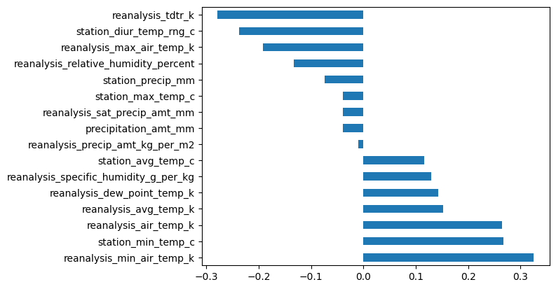
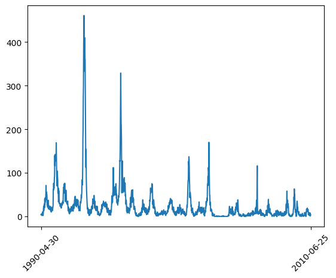
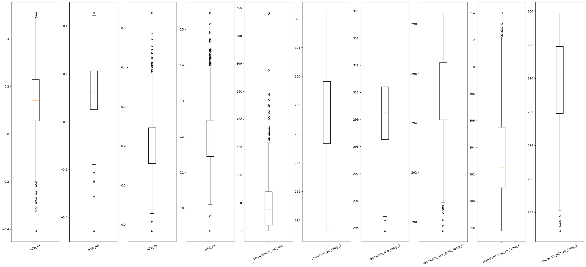
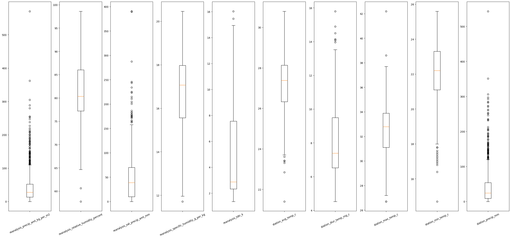

Im Jahr 2022 konnte die WHO 4,2 Millionen Fälle von Dengue-Fieber verzeichnen, wobei eine geschätzte Dunkelziffer von 400 Millionen Fällen existiert. Oftmals werden die Symptome mit denen einer Grippe verwechselt, was es schwierig macht, genaue Informationen bereitzustellen. Dies führt zu einem stetigen Anstieg der nicht gemeldeten Fälle, was schwerwiegende Konsequenzen haben könnte, ähnlich wie bei der COVID-19-Pandemie. Doch was wäre, wenn wir diese Fälle vorhersagen könnten? Was würde das für unsere Reaktion auf das Virus bedeuten? Bei der Überlegung eines potenziellen Projekts wurde deutlich, dass diese Fragen während der COVID-19-Pandemie viel zu spät gestellt wurden, und das darf nicht erneut geschehen. Hier setzen wir Machine Learning ein.
Unser Ziel ist es, gezielte Vorhersagen über Dengue-Fieber-Fälle mithilfe leicht messbarer Daten zu treffen. Dadurch können wir potenzielle Epidemien vorhersagen und verhindern und wertvolle Informationen für internationale Gesundheitsorganisationen liefern, die Epidemien daran hindern möchten, zu Pandemien zu werden. Auch lokale Gesundheitsorganisationen profitieren von diesen Informationen, da sie Epidemien in ihren Regionen vermeiden möchten.
# Import libraries necessary for handling data
import numpy as np
import pandas as pd
import csv
import os
# Importing necessary machine learning libraries
from sklearn.ensemble import RandomForestRegressor
from sklearn.model_selection import train_test_split
from sklearn.model_selection import RandomizedSearchCV
from sklearn import metrics
# Ignore warnings to keep the output clean
from warnings import filterwarnings
filterwarnings("ignore")
# where is this file located?
folder_path = os.path.dirname(os.path.realpath(__file__))
# Selecting the features we want to use
use = [
"city",
"year",
"weekofyear",
"precipitation_amt_mm",
"station_precip_mm",
"reanalysis_min_air_temp_k",
"reanalysis_dew_point_temp_k",
"reanalysis_relative_humidity_percent",
]
# Loading the feature and label data
features = pd.read_csv(
os.path.join(folder_path, "data/dengue_features_train.csv"), usecols=use
)
labels = pd.read_csv(
os.path.join(folder_path, "data/dengue_labels_train.csv"),
usecols=["city", "total_cases"],
)
# Linearly interpolate missing values in the features
features.interpolate(method="linear", inplace=True)
# Splitting the data into training and validation sets
features, Val_X, labels, Val_Y = train_test_split(
features, labels, random_state=0, test_size=0.2
)
# Initializing two Random Forest Regressors for different cities
Sregressor = RandomForestRegressor(
n_estimators=471,
min_samples_split=2,
min_samples_leaf=1,
max_features="log2",
max_depth=103,
bootstrap=False,
criterion="absolute_error",
random_state=0,
)
Iregressor = RandomForestRegressor(
n_estimators=214,
min_samples_split=5,
min_samples_leaf=1,
max_features="log2",
max_depth=97,
bootstrap=False,
criterion="absolute_error",
random_state=0,
)
# Separating data for San Juan and Iquitos
Sx = features.loc[features["city"] == "sj"]
Sy = labels.loc[labels["city"] == "sj"]
Ix = features.loc[features["city"] == "iq"]
Iy = labels.loc[labels["city"] == "iq"]
SVal_X = Val_X.loc[Val_X["city"] == "sj"]
SVal_Y = Val_Y.loc[Val_Y["city"] == "sj"]
IVal_X = Val_X.loc[Val_X["city"] == "iq"]
IVal_Y = Val_Y.loc[Val_Y["city"] == "iq"]
# Removing the "city" column as it's not needed for training
Sx.drop("city", axis=1, inplace=True)
Sy.drop("city", axis=1, inplace=True)
Ix.drop("city", axis=1, inplace=True)
Iy.drop("city", axis=1, inplace=True)
SVal_X.drop("city", axis=1, inplace=True)
SVal_Y.drop("city", axis=1, inplace=True)
IVal_X.drop("city", axis=1, inplace=True)
IVal_Y.drop("city", axis=1, inplace=True)
# Fitting the Random Forest Regressors
Sregressor.fit(Sx, Sy)
Iregressor.fit(Ix, Iy)
# Loading the test data
testfeatures = pd.read_csv(
os.path.join(folder_path, "data/dengue_features_test.csv"), usecols=use
)
# Linearly interpolate missing values in the test data
testfeatures.interpolate(method="linear", inplace=True)
# Separating test data for San Juan and Iquitos
St = testfeatures.loc[testfeatures["city"] == "sj"]
It = testfeatures.loc[testfeatures["city"] == "iq"]
# Predicting total_cases for both cities
SY_pred = Sregressor.predict(St.iloc[:, 1:])
IY_pred = Iregressor.predict(It.iloc[:, 1:])
# Writing predictions to a CSV file
with open("submission.csv", "w", newline="") as file:
writer = csv.writer(file)
writer.writerow(["city", "year", "weekofyear", "total_cases"])
for n, i in enumerate(SY_pred):
writer.writerow(
[St.iloc[n, 0], St.iloc[n, 1], St.iloc[n, 2], i.round().astype(int)]
)
for n, i in enumerate(IY_pred):
writer.writerow(
[It.iloc[n, 0], It.iloc[n, 1], It.iloc[n, 2], i.round().astype(int)]
)
# Printing evaluation metrics for both cities
print(
"Mean Absolute Error (San Juan):",
metrics.mean_absolute_error(SVal_Y, Sregressor.predict(SVal_X)),
)
print(
"Accuracy (San Juan): ",
metrics.mean_absolute_percentage_error(SVal_Y, Sregressor.predict(SVal_X)),
)
print(
"Mean Absolute Error (Iquitos):",
metrics.mean_absolute_error(IVal_Y, Iregressor.predict(IVal_X)),
)
print(
"Accuracy (Iquitos): ",
metrics.mean_absolute_percentage_error(IVal_Y, Iregressor.predict(IVal_X)),
)
# Defining hyperparameter search space for Random Forest
# Number of trees in random forest
n_estimators = [int(x) for x in np.linspace(start=100, stop=2000, num=10)]
print(n_estimators)
# Number of features to consider at every split
max_features = ["auto", "sqrt"]
# Maximum number of levels in the tree
max_depth = [int(x) for x in np.linspace(10, 110, num=11)]
max_depth.append(None)
# Minimum number of samples required to split a node
min_samples_split = [2, 5, 10]
# Minimum number of samples required at each leaf node
min_samples_leaf = [1, 2, 4]
# Method of selecting samples for training each tree
bootstrap = [True, False]
# Creating the random grid for hyperparameter tuning
random_grid = {
"n_estimators": n_estimators,
"max_features": max_features,
"max_depth": max_depth,
"min_samples_split": min_samples_split,
"min_samples_leaf": min_samples_leaf,
"bootstrap": bootstrap,
}
# Performing Randomized Search for hyperparameter tuning
Srf_random = RandomizedSearchCV(
estimator=Sregressor, param_distributions=random_grid, n_iter=100, cv=3, n_jobs=-1
)
Irf_random = RandomizedSearchCV(
estimator=Iregressor, param_distributions=random_grid, n_iter=100, cv=3, n_jobs=-1
)
Srf_random.fit(Sx, Sy["total_cases"])
print("Best Hyperparameters (San Juan):", Srf_random.best_params_)
Irf_random.fit(Ix, Iy["total_cases"])
print("Best Hyperparameters (Iquitos):", Irf_random.best_params_)
# Printing evaluation metrics for models with tuned hyperparameters
print(
"Mean Absolute Error (San Juan - Tuned):",
metrics.mean_absolute_error(SVal_Y, Srf_random.predict(SVal_X)),
)
print(
"Accuracy (San Juan - Tuned): ",
metrics.mean_absolute_percentage_error(SVal_Y, Srf_random.predict(SVal_X)),
)
print(
"Mean Absolute Error (Iquitos - Tuned):",
metrics.mean_absolute_error(IVal_Y, Irf_random.predict(IVal_X)),
)
print(
"Accuracy (Iquitos - Tuned): ",
metrics.mean_absolute_percentage_error(IVal_Y, Irf_random.predict(IVal_X)),
)
Der Datensatz umfasst Informationen aus San Juan und Iquitos über Temperatur, Luftfeuchtigkeit, Niederschlag und Vegetation in einer Woche sowie die Anzahl der Menschen, die in dieser Woche an Dengue erkrankt sind. Ein Problem des Datensatzes ist das Fehlen einiger Daten in bestimmten Wochen, weshalb teilweise Daten interpoliert wurden. Nach einer Analyse der insgesamt 22 Merkmale in Bezug auf die Anzahl der Krankheitsfälle stellte sich heraus, dass vor allem Niederschlag, minimale Temperatur und Luftfeuchtigkeit Auswirkungen auf die Krankheitsfälle haben. Dies ergibt Sinn, da diese Parameter die Population der Mücken beeinflussen, die den Krankheitserreger übertragen. Dies ist auch in Deutschland erkennbar, wo sich Mücken aufgrund des Klimawandels und steigender Temperaturen vermehren. Da der Datensatz Informationen aus zwei verschiedenen Städten enthält, wurde er aufgeteilt, und es wurden separate Modelle für jede Stadt trainiert.
Folgende Informationen werden auf einer Zeitskala (Jahr, Woche im Jahr) zur Verfügung gestellt:
Um schließlich Vorhersagen treffen zu können, haben wir vier verschiedene Machine Learning Techniken verwendet und miteinander verglichen. Zuerst haben wir ein klassisches MLP mit nur einem Ausgabe-Knoten ausprobiert, das die Anzahl der Dengue-Fälle gerundet ausgeben soll. Nach mehreren tausend Trainingsepochen erzielten wir einen mittleren absoluten Fehler von etwa 27,1779. Dabei ist zu beachten, dass das Netzwerk mit allen 22 Merkmalen trainiert wurde und keine Datentrennung vorgenommen wurde. Es besteht also durchaus noch Potenzial zur Verbesserung. Da es sich bei unserer Aufgabe um eine Regression und nicht um eine Klassifikation handelt, haben wir uns nach dem MLP speziell mit Regressionsalgorithmen beschäftigt, angefangen mit der linearen Regression, die das schlechteste Ergebnis erzielte. Mit einem durchschnittlichen absoluten Fehler (MAE) von etwa 29,9591 hatte dieses Modell die geringste Vorhersagegenauigkeit im Vergleich zu anderen von uns getesteten Ansätzen. Als nächstes haben wir die K-Nearest Neighbors Regression getestet und konnten einen durchschnittlichen absoluten Fehler (MAE) von etwa 27,5649 erzielen. Dieses Ergebnis war zwar etwas schlechter als beim MLP, aber das Verhältnis zur Lernzeit sprach massiv für K-NN. Wenn das Modell weiter optimiert wird, ist es wahrscheinlich, dass es das MLP übertrifft. Schließlich wurde Random Forest implementiert, der mit einem MAE von etwa 25,7 am besten abschnitt. Dieser wurde zusätzlich optimiert. Weitere Verbesserungen könnten mit Gradient Boosting bzw. XGBoost erzielt werden, was in der Regel bessere Ergebnisse als Random Forest liefert. Die erzielten MAEs scheinen auf den ersten Blick sehr groß zu sein, was grundsätzlich auch stimmt. Dies liegt möglicherweise an dem kleinen Datensatz von "nur" 1456 Einträgen. Dennoch kann sich dieses Ergebnis sehen lassen, da wir im internationalen Vergleich des "DengAI"-Wettbewerbs unter mehr als 13.000 Teilnehmern und über 5000 Teams den 1728. Platz erreichen konnten.
Korrelation Hier haben wir die zusammenhänge zwischen den einzelnen Features und den Anzahl der Fälle untersucht.
Fälle Anzahl der Fälle zu jedem gegebenen Zeitpunkt
BOXPLOTS Hier ist die eine Hälfte der numerischen Daten. Dargestellt als Boxplots.
BOXPLOTS Hier ist die andere Hälfte der numerischen Daten. Dargestellt als Boxplots.
Mit Hilfe von KI ist es nun möglich, eine wöchentliche Vorhersage über Dengue-Fieber-Fälle in San Juan und Iquitos zu treffen. Dabei beträgt der mittlere absolute Fehler 25,7. Gesundheitsorganisationen können der Vorhersage der KI genau entnehmen, in welchen Wochen sie besonders aufmerksam sein sollten, um die besten Maßnahmen zum richtigen Zeitpunkt zu ergreifen. In Zukunft möchten wir versuchen, den MAE so weit zu minimieren, dass er kaum noch relevant ist. Hierfür kommen natürlich das Sammeln von mehr Daten infrage, aber auch die Anwendung anderer Methoden wie LSTM-Neuronale Netze oder Zeitreihenanalysen. San Juan und Iquitos sind nicht die einzigen Städte, die mit der Gefahr von Dengue-Fieber konfrontiert sind, sondern alle Städte in tropischen und subtropischen Gebieten [Weltkarte mit Markierungen]. Aufgrund des Klimawandels sind bald sogar Länder wie Deutschland oder Frankreich stark betroffen. Da unsere Daten auf Wetterdaten beschränkt sind, ist es uns auch in Zukunft möglich, unsere Methoden auf jede beliebige Stadt anzuwenden, um Dengue-Fieber effektiv zu bekämpfen.